Equipamentos de primeiros socorros ou Salva-Vidas
Durante períodos de emergência ou catástrofe, em que é preciso abandonar a habitação, ou durante epidemias, em que é recomendado ficar fechado em casa, é muito importante ter um kit-sobrevivência preparado e sempre à mão. Como regra, cada família deve ter um kit de primeiros socorros, porém nem sempre sabemos o que guardar neste kit.
Portanto esta lista tem como função, ajudar a montar um kit de primeiros socorros adequado.
Medicamentos Essenciais
Água oxigenada: é indicada como um bom antisséptico.
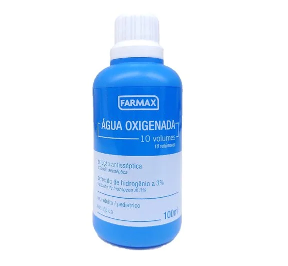
Álcool
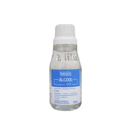
Analgésico: Você não vai durar em uma situação de emergência se não puder se mover por causa de um ferimento.
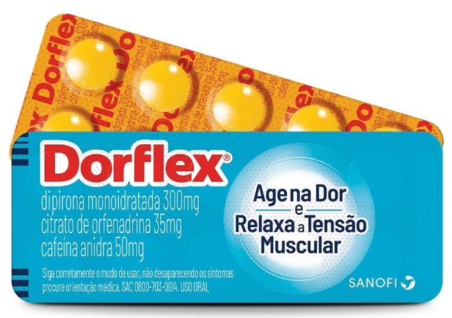
Anti-Histamínico ou Antialérgico
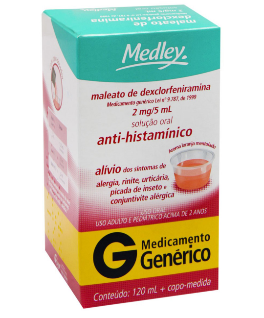
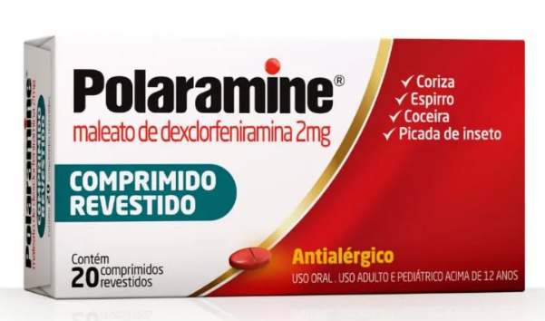
Anti-inflamatório
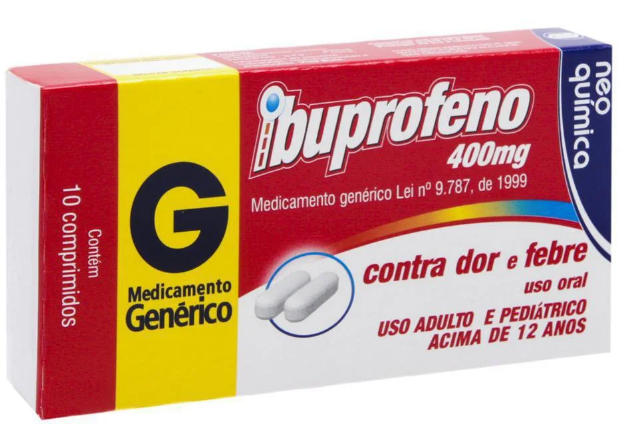
Outros Medicamentos
Vaselina estéril
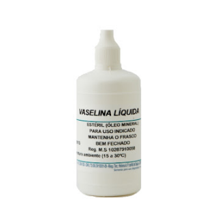
Penicilina: Tomando MUITO cuidado em seu uso, pois pode lhe matar se você for alérgico
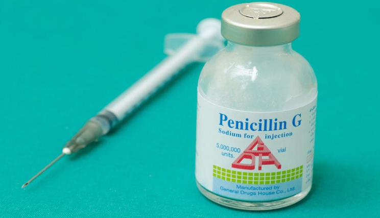
Itens Essenciais
Compressas de gaze estéril
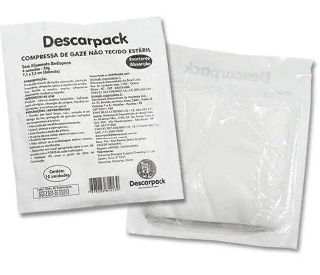
Bandagem Adesiva ou Bandagem Tradicional
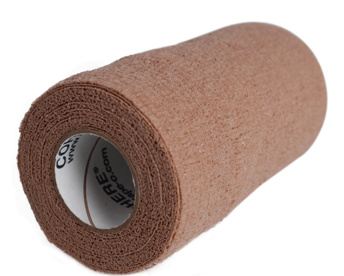
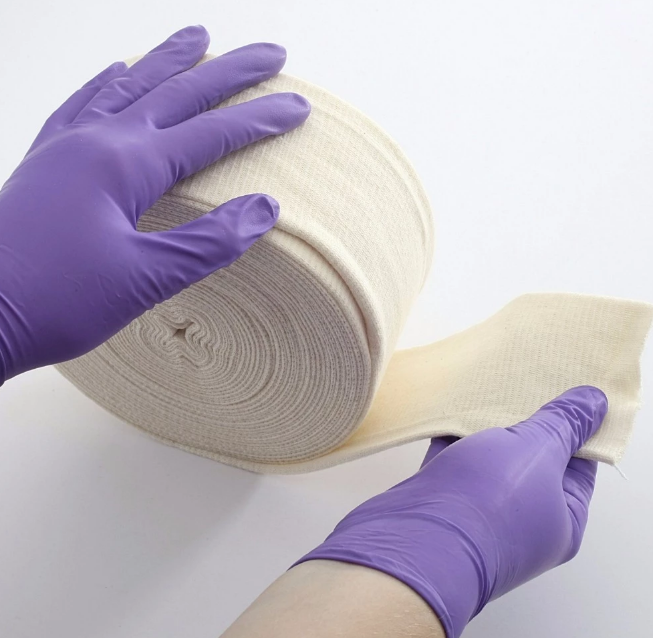
Esparadrapo
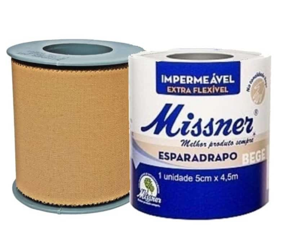
Band Aid
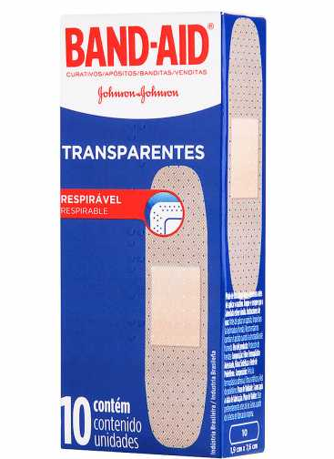
Pano limpo tipo fralda
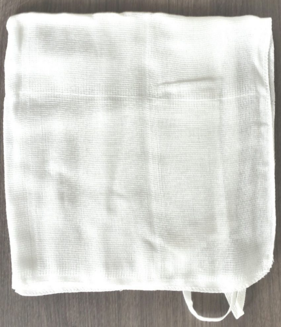
Algodão
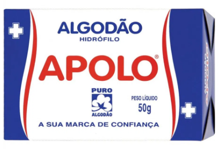
Linha e Agulha para sutura
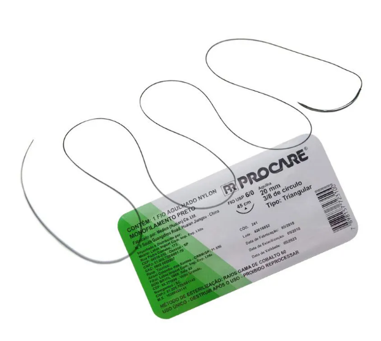
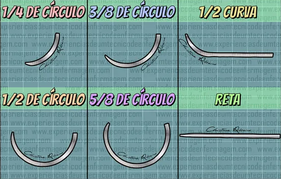
Outros Itens
Luvas
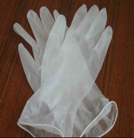
Tesoura pequena
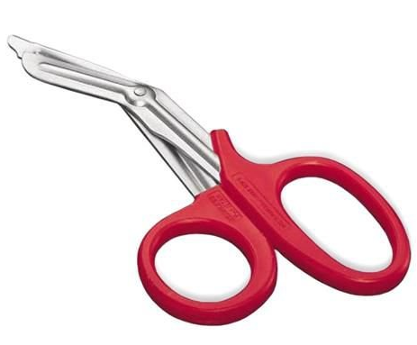
Bolsa de água térmica
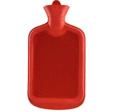